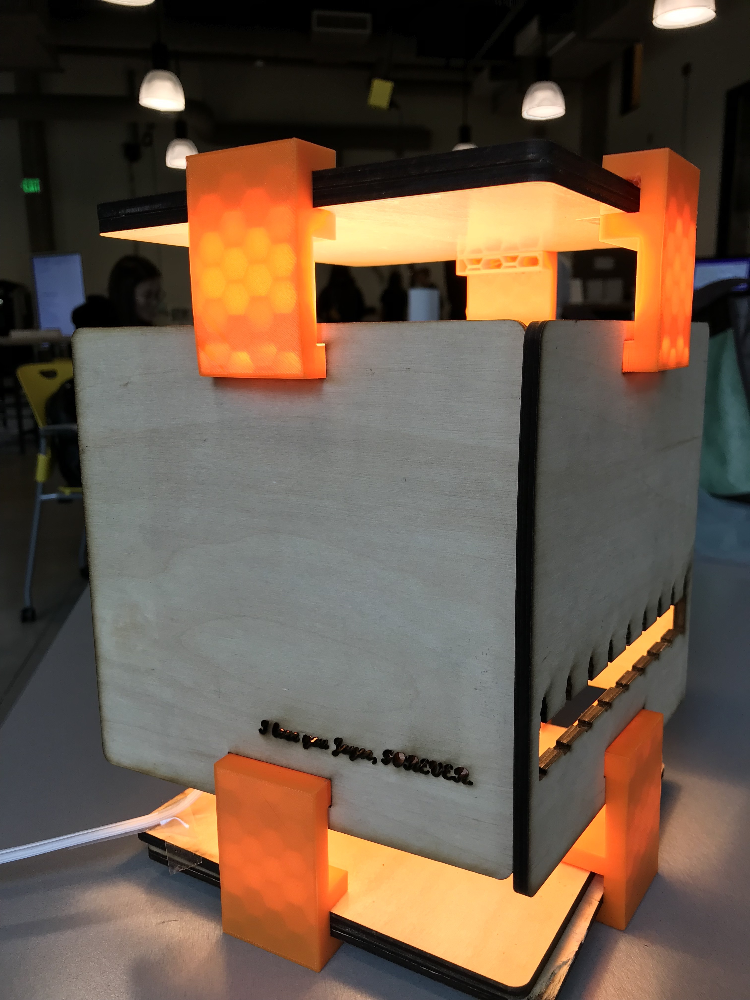
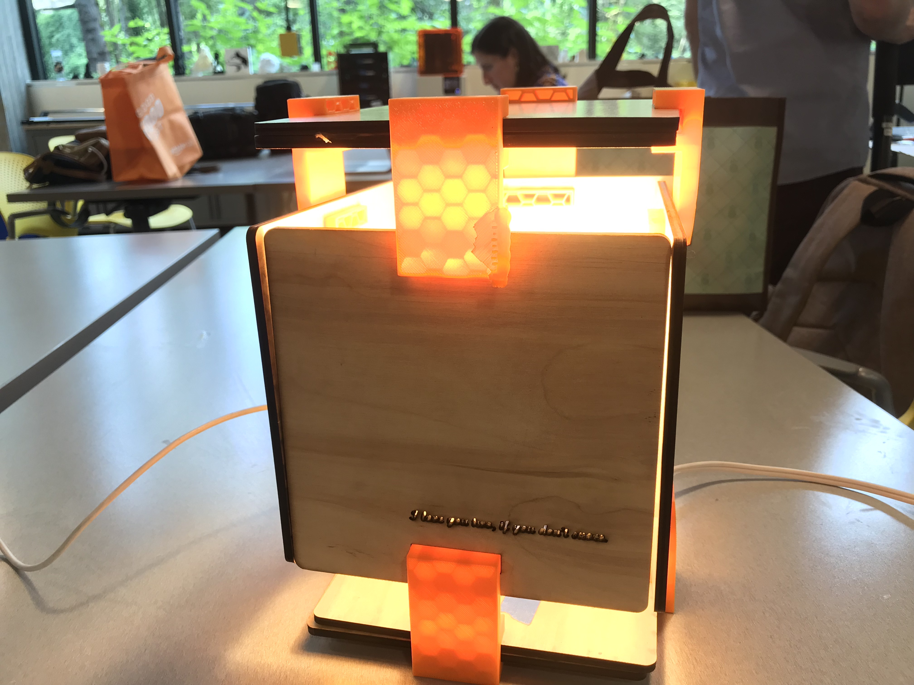
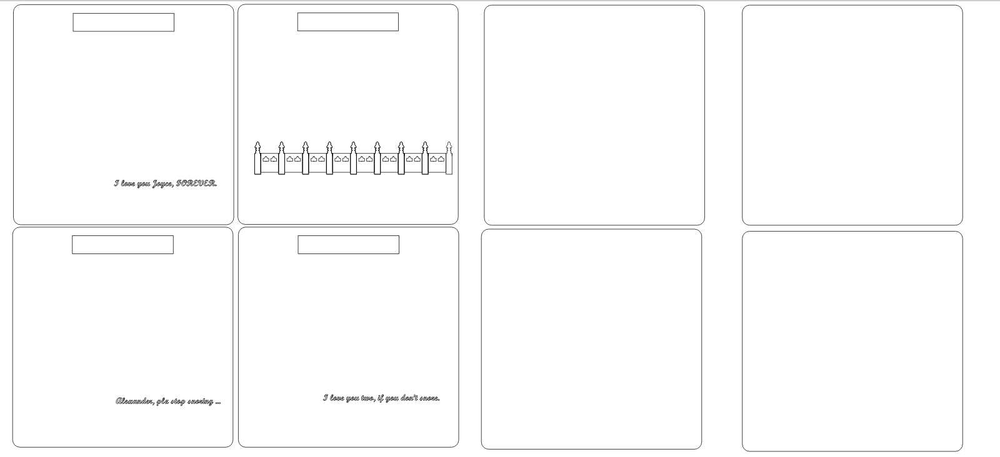
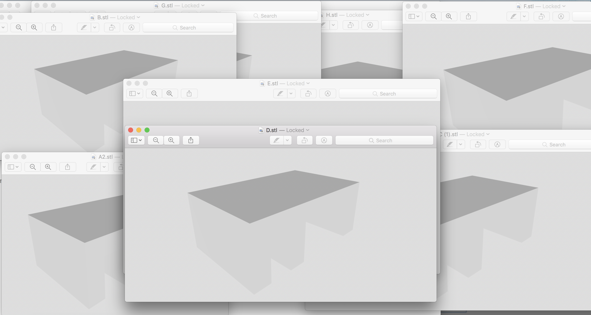
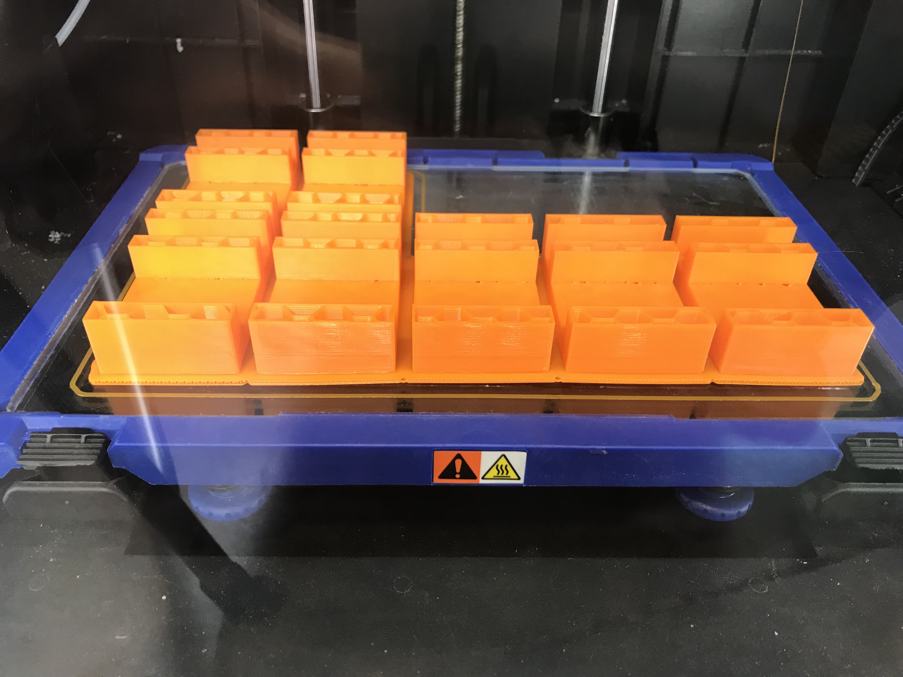
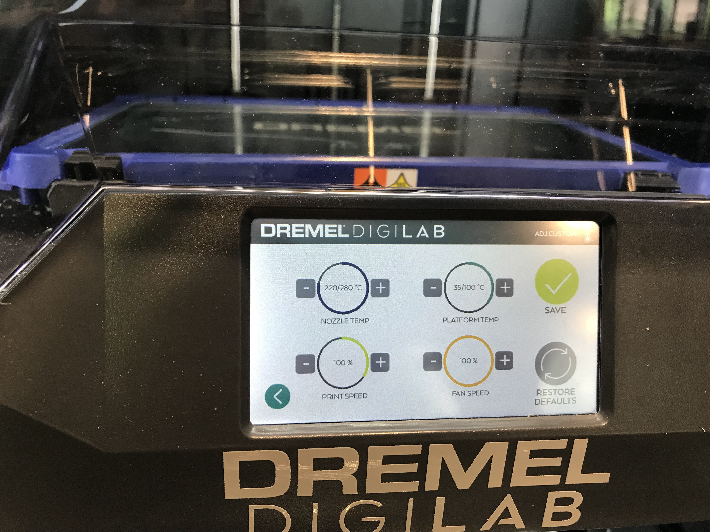
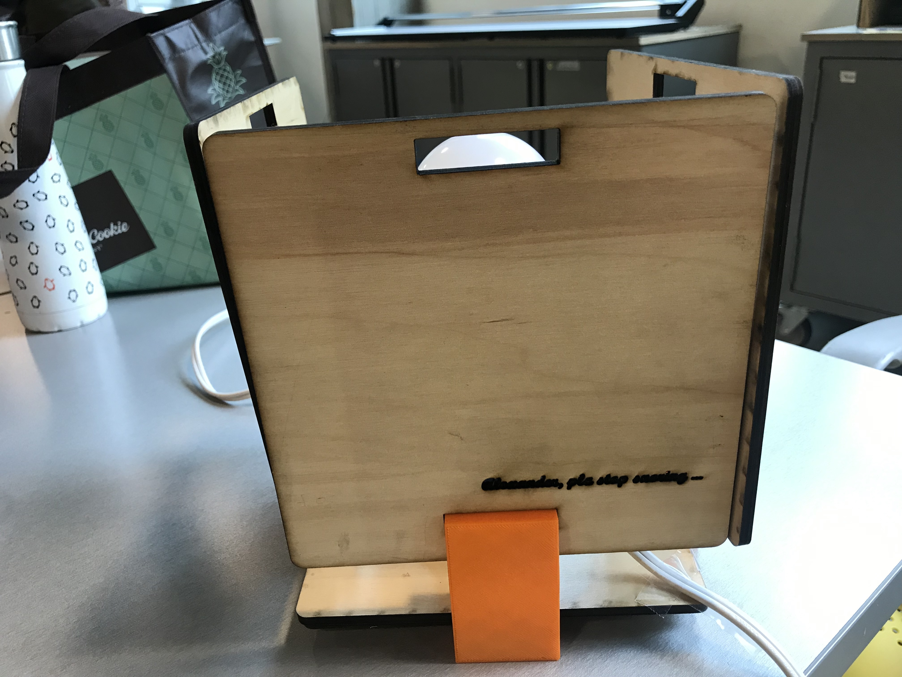
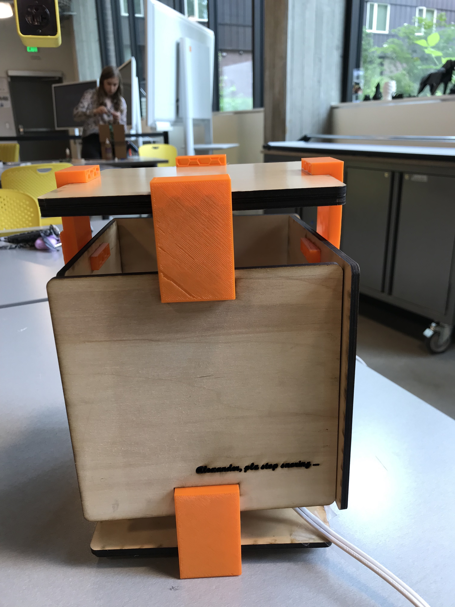

Background
For the final project, I wanted to build something that I could use in the future. I have been thinking getting a new night stand lamp for a long time, as my current one is too bright. So I designed this lamp! Before making the pieces, I told myself that I am definately putting it on my night stand. However, when I was 3D printing and laser cutting, I was not so positive. But when I finally assembled it, I think I will use this lamp that I created :).
 
When creating the patterns on the lamp, I first went online to get inspiration. As I was browsing through, a thought occurs "wait, since I am creating it, why not just design patterns that are unique and meaningful for me?" Given that the lamp will be placed in the bedroom of me and my husband, I decided to write some words to my beloved one. Such as "Plz stop snoring, darling :).". I also created the outline of the bridge where my husband and I firsted dated on, and good luck with sleeping with that!
Execution
I created the shapes in illustrator and laser-cut them in the mill. Originally, I planned to use Delrin to be the materials for the sides and plywood for the base and lid. However, the Delrin reserved in the Mill was running out, so I decided to use plywood for sides, lid, and base. The plywood I bought at Mill was with high quality, and I was really glad. I printed 8 pieces of squares with the same size. Then I used wood glue to stick two pieces together to make the lid and base thicker than the sides. I also realized that in the original design, I forgot to draw a hole in the bottom of each side piece to accommate the bottom joints, so I laser-cut again to create those holes.

The settings for the laser cutter was: Speed-5; Power-100; Frequency-100.
After the glue went dry, I noticed that because the glue was not applied evenly, the thickness of each side plane of the lid and base cubes were slightly different. To insure that the joint could fit perfectly with each size plane, I carefully measured the thickness and apply them individually for the pieces to 3D print.

I 3D printed one piece, which worked well, and continued to print the rest of the pieces of joints! The 3D printer settings are as below:
 
With all the pieces ready, I started to assemble! Most of the joints fit very well, the last piece was a little hard to assemble but I did it! Yeah!  
Thanks Colleen for helping me with Onshape!
Source files: Laser Cutting Source File Onshape CAD. 3D Printing Joints Source files.